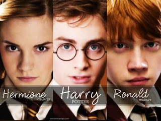

Si bien es cierto que en el transcurso de las ocho peliculas hubo una cantidad enorme de personajes importantes para la saga, que dejaron huella para todos los potterhead, existe el llamado "El Trio Dorado", que se conforma por los conocidos actores Daniel Radcliffe, Rupert Grint y Emma Watson, quienes dan vida a los personajes de Harry Potter, Ron Weasley y Hermione Granger respectivamente.
Conocido actor británico, quien comenzó su carrera a los 11 años de edad en la saga más importante de la historia.
Actualmente tiene 28 años y sigue siendo uno de los actores más famosos y queridos.
Rupert continuó su carrera como actor en distintas categorías. Sin embargo, no ha tenido el mismo éxito como el de sus compañeros de la famosa saga.
La joven actriz es de las más importantes y reconocidas a nivel mundial, ya que es embajadora de buena voluntad de ONU mujeres, además de su protagonismo en la actuación en películas tan reconocidas como "La bella y la bestia".